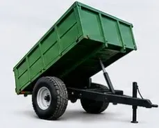
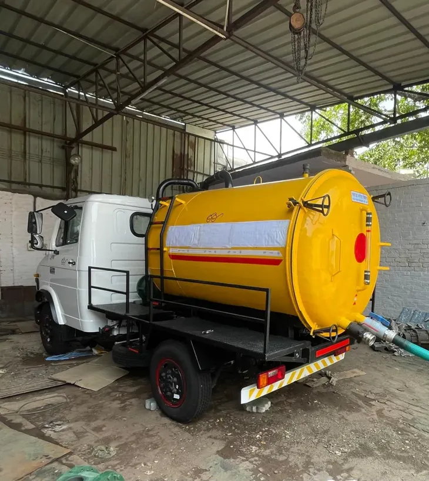
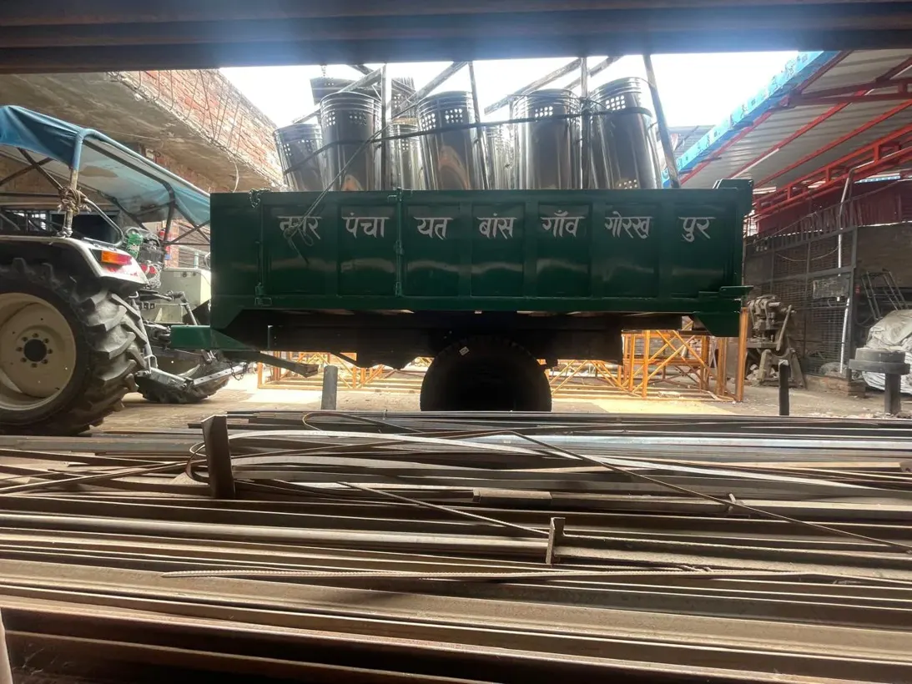

MANUFACTURER & SUPPLIER · UNNAO, INDIA
Equipment for municipal work and agriculture.
Explore Globe International’s range of waste collection equipment, road and drain cleaning machinery, agricultural trailers and sanitation units.

THE EQUIPMENT RANGE
Featured equipment

THE MANUFACTURER
Globe International, Unnao
A manufacturer and supplier of engineering equipment for municipal operations and agricultural transport.
About Globe